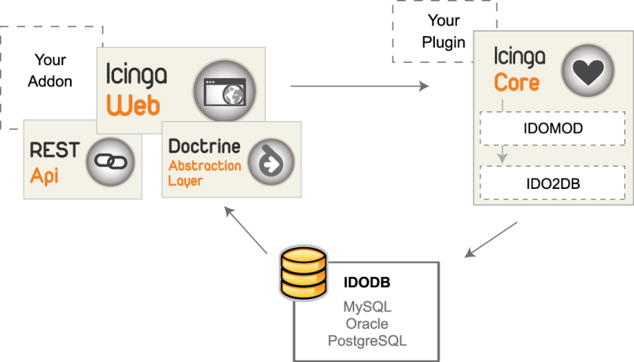

![[Important]](../images/important.png) |
Important |
|---|---|
|
In the days leading up to the v1.5 release, we bid our Icinga API goodbye and ushered in a new API and Web concept. You may ask yourself, what was this API anyway? Indeed, if you weren’t developing or adapting extensions for the new web interface, you wouldn’t have had much contact with this important project component. When Icinga was conceived, one of the main missions was to facilitate the development of addons and plugins. The API provided a set of commonly used request operations, removing the need to write sql-queries and generally a lot of excess code. All was well until we decided to offer some extra database flexibility. When we added support for Oracle and PostgreSQL on top of MySQL, we also gave our Icinga API team some extra work. With each change, bug fix or new feature, Marius, Michael L and Jannis had to edit the queries for each database back-end separately. This process was not only complicated and error-prone, but also a sign that we needed a more flexible architecture. As of Icinga 1.5, the external Icinga API was replaced by an internal database layer Doctrine, and merged into Icinga Web. Much like before, queries will run through this layer between the database (IDOUtils) and the web interface. However, with Doctrine we can use several database back-ends and querying the database is now much easier. In contrast to SQL, its object relational mapper (ORM) uses Doctrine Query Language, so we now have the flexibility minus the code duplication.  That being said, queries from the old API still exist, thanks to the ‘legacy layer’ which will transform old API queries into this new ORM type. In this way, we maintain compatibility with addons designed for older Icinga versions. The Rest API is also still there as part of Icinga Web, extending on our Doctrine layer with HTTP for addons that require only certain bits of monitoring info. With the departure of a standalone API, the average Icinga user will barely notice a change, apart from the fact that the
configuration has now been moved to the |
|
Important |
|---|---|
|
The following is deprecated and only kept for reference |
Prerequisites
You need Icinga Core and IDOUtils or MKLiveStatus installed and running in order to use the API.
![[Note]](../images/note.png) |
Note |
|---|---|
|
If you don't have Icinga yet please follow the instructions given in the "quickstart-idoutils" documentation. |
If you are using IDOUtils database as data source, install PHP-PDO.
RHEL/Fedora/CentOS
Make sure you have a repository/packages for PHP 5.2.x - RHEL/CentOS only support 5.1.6 out of the box.
# yum install php-pdo php-mysql|pgsql
Debian/Ubuntu
# apt-get install php5 php5-mysql|pgsql
openSuSE
Please use yast to install the packages php5, php5-pdo, and php5-mysql|php5-pgsql.
Installation and Configuration
|
Note |
|---|---|
|
Icinga API is already included in the package with Core, IDOUtils and docs and also installed during 'make install'. If you already installed this package, there's no need to install Icinga API. It is located by default in /usr/local/icinga/share/icinga-api/ and you can skip this section! |
|
Note |
|---|---|
|
If you just require Icinga API for Icinga-Web, and already installed the Core with IDOUtils, skip this Howto and refer directly to installing Icinga Web. |
Download
Take your clone from the icinga-api.git to get a fresh branch
# git clone git://git.icinga.org/icinga-api.git
or if you just need an update:
# cd icinga-api && git pull origin master
or download the software using https://git.icinga.org/index?p=icinga-api.git;a=snapshot;h=refs/heads/master;sf=tgz.
Installation
Unpack Icinga API run configure and install it.
# tar xzvf icinga-api-(version).tar.gz # ./configure
You can set the prefix where it will be installed, and point Icinga API where your Icinga and IDOUtils config is located and which users are required to run (those settings are directly applied when installing the API through Icinga Core Installation).
# ./configure --datarootdir=/usr/local/icinga/share \ --sysconfdir=/usr/local/icinga/etc \ --with-command-user=icinga-cmd \ --with-command-group=icinga-cmd \ --with-icinga-user=icinga \ --with-icinga-group=icinga \ --with-web-user=www-data \ --with-web-group=www-data
|
Note |
|---|---|
|
The --with-web... directives have to be set. Otherwise the web logs will not be written correctly. This may also lead to an empty main cronk. Please note that the values of user and group differ across distributions. |
# make install
Configuration
If you are developing you own Addon based on the Icinga API, you need the following associative array.
$idoConfig = array (
'type' => '<Type of database>',
'host' => '<Database hostname>',
'database' => '<Databasename>',
'user' => '<Username>',
'password' => '<password>',
'persistent' => <true | false>,
'table_prefix' => '<table prefix>',
);
Example:
$idoConfig = array (
'type' => 'mysql',
'host' => 'localhost',
'database' => 'ido',
'user' => 'idouser',
'password' => 'idopassword',
'persistent' => true,
'table_prefix' => 'icinga_',
);
Supported Backends
Currently the following backend types are available. More information about that can be found in doc/icinga-api-types.txt.
IDOUtils DB - OK
Livestatus Module - experimental, not for productive usage
Filebased, status.dat - experimental, not for productive usage
Use of the API
Examples can be found in doc/examples
Fetching data
hostnames and corresponding states
Create an instance of class IcingaApi:
$api = IcingaApi::getConnection(IcingaApi::CONNECTION_IDO, $idoConfig);
Create your search:
$apiRes = $api->createSearch() ->setSearchTarget(IcingaApi::TARGET_HOST) ->setResultColumns(array(’HOST_NAME’, ‘HOST_CURRENT_STATE’)) ->fetch();
By using setSearchFilter() you can define filters to narrow down the result set:
$apiRes = $api->createSearch() ->setSearchTarget(IcingaApi::TARGET_HOST) ->setResultColumns(array(’HOST_NAME’, ‘HOST_CURRENT_STATE’)) ->setSearchFilter(HOST_NAME, ‘Switch%’, IcingaApi::MATCH_LIKE) ->fetch();
Processing results
foreach($apiRes as $apiHandle){
echo ‘Host ‘.$apiHandle->HOST_NAME.’ has state ‘.$apiHandle->HOST_CURRENT_STATE.’<br />’;
}
Output without filter:
Host localhost has state 0 Host MySql has state 0 Host router-01 has state 0 Host windows100 has state 0 Host Apache_01 has state 0
Output with filter:
Host switch70 has the current state 0 Host switch71 has the current state 0 Host switch72 has the current state 0 Host switch73 has the current state 0 Host switch74 has the current state 0 Host switch75 has the current state 0 Host switch76 has the current state 0 Host switch77 has the current state 0
Complete code without use of filters
<?
// Path to icinga api file
$apiFile = ‘icinga-api/IcingaApi.php’;
// Database connection
$idoConfig = array (
'type' => 'mysql',
'host' => 'localhost',
'database' => 'ido',
'user' => 'idouser',
'password' => 'idopassword',
'persistent' => true,
'table_prefix' => 'icinga_',
);
// Include required files
require_once($apiFile);
// Instance the class
$api = IcingaApi::getConnection(IcingaApi::CONNECTION_IDO, $idoConfig);
// Create search
$apiRes = $api->createSearch()
->setSearchTarget(IcingaApi::TARGET_HOST)
->setResultColumns(array('HOST_NAME', 'HOST_CURRENT_STATE'))
->fetch();
// Create output
foreach($apiRes as $apiHandle){
echo 'Host '.$apiHandle->HOST_NAME.' has the current state '.$apiHandle->HOST_CURRENT_STATE.'<br />';
}
?>
Please have a look at the git repository for further information or consult the examples in the doc/examples folder.
© 1999-2009 Ethan Galstad, 2009-2017 Icinga Development Team, https://www.icinga.com